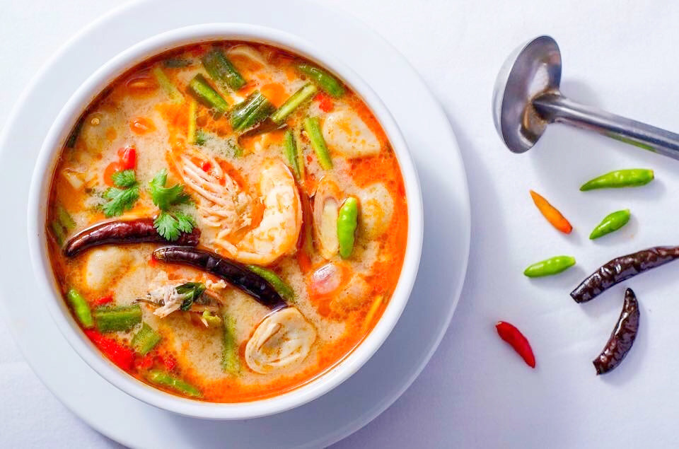

Somtum

Description
This dish is from Thailand, Another name is Spicy Shrimp soup.
Ingredients (One serving)
- Water or stock 6 cups
- Fish sauce 1 or 2 tbsp (If you'd prefer more savory flavour)
- Kaffir lime 4 leaves
- Lemongrass white part only crushed 1 stalk
- Finely chopped Galangal 2 pieces
- Garlic crushed 2 cloves
- Salt and pepper (to taste)
- Shrimp peeled and deveined 500 grams
- Scallions chopped 1/2 bunch
- Straw mushrooms 1 cup
- Limes juice 2 tbsp
- Thai chilli peppers sliced into rounds 2 tbsp
- Cilantro finely chopped 1/2 bunch
Steps
- Bring all the liquid part to boil add all the vegetable ingredients
- Put in all the mushrooms and shrimps that you have
- Bring to low simmer, Season with salt and pepper to taste
- Stir in lime juice, cilantro, and chili
- Enjoy !!
Back to Main Page